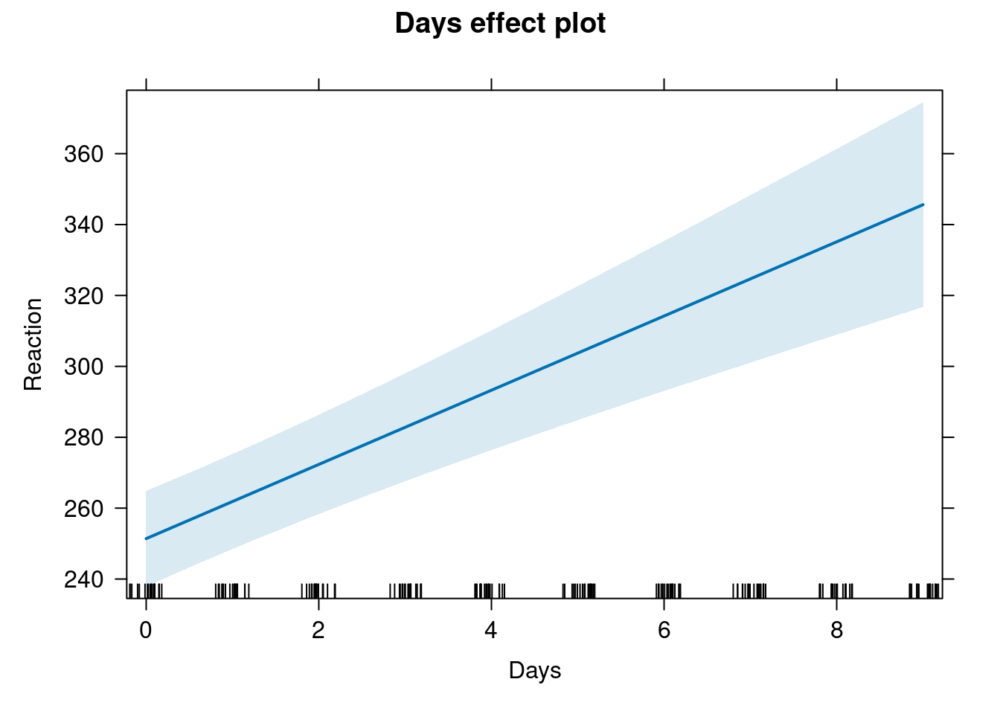
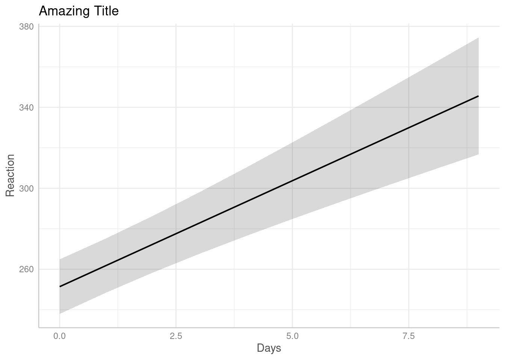

library(lme4)
library(equatiomatic)Useful GLMER tools
Equations from models
fit_lme4 <- lmer(Reaction ~ Days + (Days|Subject), data = sleepstudy)
equatiomatic::extract_eq(fit_lme4)\[ \begin{aligned} \operatorname{Reaction}_{i} &\sim N \left(\alpha_{j[i]} + \beta_{1j[i]}(\operatorname{Days}), \sigma^2 \right) \\ \left( \begin{array}{c} \begin{aligned} &\alpha_{j} \\ &\beta_{1j} \end{aligned} \end{array} \right) &\sim N \left( \left( \begin{array}{c} \begin{aligned} &\mu_{\alpha_{j}} \\ &\mu_{\beta_{1j}} \end{aligned} \end{array} \right) , \left( \begin{array}{cc} \sigma^2_{\alpha_{j}} & \rho_{\alpha_{j}\beta_{1j}} \\ \rho_{\beta_{1j}\alpha_{j}} & \sigma^2_{\beta_{1j}} \end{array} \right) \right) \text{, for Subject j = 1,} \dots \text{,J} \end{aligned} \]
Plotting effects
library(effects)
plot(allEffects(fit_lme4))
library(ggeffects)
library(ggplot2)
plot(ggeffect(fit_lme4)) +
ggtitle("Amazing Title")
Marginal effects
library(emmeans)
fit <- lm(Sepal.Length ~ Petal.Width * Species, data = iris)
emmeans(fit, ~ Species) Species emmean SE df lower.CL upper.CL
setosa 5.89 0.6225 144 4.66 7.12
versicolor 5.76 0.0807 144 5.60 5.91
virginica 6.05 0.2168 144 5.62 6.48
Confidence level used: 0.95 # comparisons
emmeans(fit, pairwise ~ Species)$emmeans
Species emmean SE df lower.CL upper.CL
setosa 5.89 0.6225 144 4.66 7.12
versicolor 5.76 0.0807 144 5.60 5.91
virginica 6.05 0.2168 144 5.62 6.48
Confidence level used: 0.95
$contrasts
contrast estimate SE df t.ratio p.value
setosa - versicolor 0.137 0.628 144 0.219 0.9739
setosa - virginica -0.157 0.659 144 -0.238 0.9691
versicolor - virginica -0.295 0.231 144 -1.274 0.4121
P value adjustment: tukey method for comparing a family of 3 estimates # comparison fixing Petal.Width
emmeans(fit, pairwise ~ Species, at = list(Petal.Width = 1))$emmeans
Species emmean SE df lower.CL upper.CL
setosa 5.71 0.494 144 4.73 6.68
versicolor 5.47 0.132 144 5.21 5.73
virginica 5.92 0.264 144 5.40 6.44
Confidence level used: 0.95
$contrasts
contrast estimate SE df t.ratio p.value
setosa - versicolor 0.236 0.511 144 0.462 0.8890
setosa - virginica -0.213 0.560 144 -0.380 0.9236
versicolor - virginica -0.449 0.295 144 -1.521 0.2840
P value adjustment: tukey method for comparing a family of 3 estimates # comparison of slopes
emtrends(fit, ~ Species, var = "Petal.Width") Species Petal.Width.trend SE df lower.CL upper.CL
setosa 0.930 0.649 144 -0.353 2.21
versicolor 1.426 0.346 144 0.743 2.11
virginica 0.651 0.249 144 0.159 1.14
Confidence level used: 0.95 emtrends(fit, pairwise ~ Species, var = "Petal.Width")$emtrends
Species Petal.Width.trend SE df lower.CL upper.CL
setosa 0.930 0.649 144 -0.353 2.21
versicolor 1.426 0.346 144 0.743 2.11
virginica 0.651 0.249 144 0.159 1.14
Confidence level used: 0.95
$contrasts
contrast estimate SE df t.ratio p.value
setosa - versicolor -0.496 0.736 144 -0.675 0.7786
setosa - virginica 0.279 0.695 144 0.402 0.9149
versicolor - virginica 0.776 0.426 144 1.819 0.1669
P value adjustment: tukey method for comparing a family of 3 estimates # factorial designs
warp.lm <- lm(breaks ~ wool * tension, data = warpbreaks)
emmeans (warp.lm, pairwise ~ wool | tension)$emmeans
tension = L:
wool emmean SE df lower.CL upper.CL
A 44.6 3.65 48 37.2 51.9
B 28.2 3.65 48 20.9 35.6
tension = M:
wool emmean SE df lower.CL upper.CL
A 24.0 3.65 48 16.7 31.3
B 28.8 3.65 48 21.4 36.1
tension = H:
wool emmean SE df lower.CL upper.CL
A 24.6 3.65 48 17.2 31.9
B 18.8 3.65 48 11.4 26.1
Confidence level used: 0.95
$contrasts
tension = L:
contrast estimate SE df t.ratio p.value
A - B 16.33 5.16 48 3.167 0.0027
tension = M:
contrast estimate SE df t.ratio p.value
A - B -4.78 5.16 48 -0.926 0.3589
tension = H:
contrast estimate SE df t.ratio p.value
A - B 5.78 5.16 48 1.120 0.2682Also the marginaleffects package is amazing.
Tables
library(sjPlot)
tab_model(fit)| Sepal.Length | |||
| Predictors | Estimates | CI | p |
| (Intercept) | 4.78 | 4.43 – 5.12 | <0.001 |
| Petal Width | 0.93 | -0.35 – 2.21 | 0.154 |
| Species [versicolor] | -0.73 | -1.71 – 0.25 | 0.141 |
| Species [virginica] | 0.49 | -0.57 – 1.56 | 0.362 |
| Petal Width × Species [versicolor] |
0.50 | -0.96 – 1.95 | 0.501 |
| Petal Width × Species [virginica] |
-0.28 | -1.65 – 1.09 | 0.688 |
| Observations | 150 | ||
| R2 / R2 adjusted | 0.677 / 0.666 | ||
tab_model(fit_lme4)| Reaction | |||
|---|---|---|---|
| Predictors | Estimates | CI | p |
| (Intercept) | 251.41 | 237.94 – 264.87 | <0.001 |
| Days | 10.47 | 7.42 – 13.52 | <0.001 |
| Random Effects | |||
| σ2 | 654.94 | ||
| τ00 Subject | 612.10 | ||
| τ11 Subject.Days | 35.07 | ||
| ρ01 Subject | 0.07 | ||
| ICC | 0.72 | ||
| N Subject | 18 | ||
| Observations | 180 | ||
| Marginal R2 / Conditional R2 | 0.279 / 0.799 | ||
library(gtsummary)
gtsummary::tbl_regression(fit_lme4)| Characteristic | Beta | 95% CI |
|---|---|---|
| Days | 10 | 7.4, 13 |
| Abbreviation: CI = Confidence Interval | ||
See also http://cran.r-project.org/web/packages/jtools/vignettes/summ.html